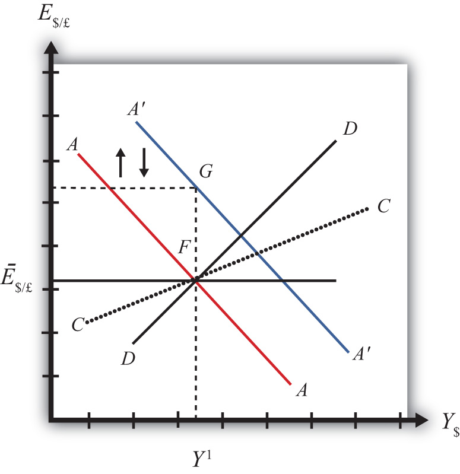

In this section, we use the AA-DD model to assess the effects of monetary policy in a fixed exchange rate system. Recall from Chapter 18 "Interest Rate Determination" that the money supply is effectively controlled by a country’s central bank. In the case of the United States, this is the Federal Reserve Board, or the Fed. When the money supply increases due to action taken by the central bank, we refer to it as expansionary monetary policy. If the central bank acts to reduce the money supply, it is referred to as contractionary monetary policy. Methods that can be used to change the money supply are discussed in Chapter 18 "Interest Rate Determination", Section 18.5 "Controlling the Money Supply".
Suppose the United States fixes its exchange rate to the British pound at the rate Ē$/£. This is indicated in Figure 23.1 "Expansionary Monetary Policy with a Fixed Exchange Rate" as a horizontal line drawn at Ē$/£. Suppose also that the economy is originally at a superequilibrium shown as point F with original gross national product (GNP) level Y1. Next, suppose the U.S. central bank (the Fed) decides to expand the money supply by conducting an open market operation, ceteris paribus. Ceteris paribus means that all other exogenous variables are assumed to remain at their original values. A purchase of Treasury bonds by the Fed will lead to an increase in the dollar money supply. As shown in Chapter 20 "The AA-DD Model", Section 20.5 "Shifting the AA Curve", money supply changes cause a shift in the AA curve. More specifically, an increase in the money supply will cause AA to shift upward (i.e., ↑MS is an AA up-shifter). This is depicted in the diagram as a shift from the red AA to the blue A′A′ line.
Figure 23.1 Expansionary Monetary Policy with a Fixed Exchange Rate
The money supply increase puts upward pressure on the exchange rate in the following way. First, a money supply increase causes a reduction in U.S. interest rates. This in turn reduces the rate of return on U.S. assets below the rate of return on similar assets in Britain. Thus international investors will begin to demand more pounds in exchange for dollars on the private Forex to take advantage of the relatively higher RoR of British assets. In a floating exchange system, excess demand for pounds would cause the pound to appreciate and the dollar to depreciate. In other words, the exchange rate E$/£ would rise. In the diagram, this would correspond to a movement to the new A′A′ curve at point G.
However, because the country maintains a fixed exchange rate, excess demand for pounds on the private Forex will automatically be relieved by Fed intervention. The Fed will supply the excess pounds demanded by selling reserves of pounds in exchange for dollars at the fixed exchange rate. As we showed in Chapter 21 "Policy Effects with Floating Exchange Rates", Section 21.5 "Foreign Exchange Interventions with Floating Exchange Rates", Fed sales of foreign currency result in a reduction in the U.S. money supply. This is because when the Fed buys dollars in the private Forex, it is taking those dollars out of circulation and thus out of the money supply. Since a reduction of the money supply causes AA to shift back down, the final effect will be that the AA curve returns to its original position. This is shown as the up and down movement of the AA curve in the diagram. The final equilibrium is the same as the original at point F.
The AA curve must return to the same original position because the exchange rate must remain fixed at Ē$/£. This implies that the money supply reduction due to Forex intervention will exactly offset the money supply expansion induced by the original open market operation. Thus the money supply will temporarily rise but then will fall back to its original level. Maintaining the money supply at the same level also assures that interest rate parity is maintained. Recall that in a fixed exchange rate system, interest rate parity requires equalization of interest rates between countries (i.e., i$ = i£). If the money supply did not return to the same level, interest rates would not be equalized.
Thus after final adjustment occurs, there are no effects from expansionary monetary policy in a fixed exchange rate system. The exchange rate will not change and there will be no effect on equilibrium GNP. Also, since the economy returns to the original equilibrium, there is also no effect on the current account balance.
Contractionary monetary policy corresponds to a decrease in the money supply or a Fed sale of Treasury bonds on the open bond market. In the AA-DD model, a decrease in the money supply shifts the AA curve downward. The effects will be the opposite of those described above for expansionary monetary policy. A complete description is left for the reader as an exercise.
The quick effects, however, are as follows. U.S. contractionary monetary policy with a fixed exchange rate will have no effects within the economy. E$/£, Y$ and the current account balance will all be maintained or return to their initial levels.
This result indicates that monetary policy is ineffective in influencing the economy in a fixed exchange rate system. In contrast, in a floating exchange rate system, monetary policy can either raise or lower GNP, at least in the short run. Thus monetary policy has some effectiveness in a floating system, and central bank authorities can adjust policy to affect macroeconomic conditions within their economy. For example, if the economy is growing only sluggishly, or perhaps is contracting, the central bank can raise the money supply to help spur an expansion of GNP, if the economy has a floating exchange rate. However, with a fixed exchange rate, the central bank no longer has this ability. This explains why countries lose monetary autonomy (or independence) with a fixed exchange rate. The central bank can no longer have any influence over the interest rate, exchange rate, or the level of GNP.
One other important comparison worth making is between expansionary monetary policy in a fixed exchange rate system with sterilized foreign exchange (Forex) interventions in a floating system. In the first case, expansionary monetary policy is offset later with a contraction of the money supply caused by automatic Forex intervention. In the second case, Forex intervention leading to an expansion of the money supply is countered with contractionary open market operations. In the first case, the interest rate is maintained to satisfy interest rate parity. In the second case, the interest rate remains fixed by design. Clearly, these two situations represent exactly the same set of actions, though in a different order. Thus it makes sense that the two policies would have the same implications—that is, “no impact” on any of the economic variables.
Suppose that Latvia can be described with the AA-DD model and that Latvia fixes its currency, the lats (Ls), to the euro. Consider the changes in the exogenous variable in the left column. Indicate the short-run effects on the equilibrium levels of Latvian GNP, the Latvian interest rate (iLs) , the Latvian trade balance, and the exchange rate (ELs/€). Use the following notation:
+ the variable increases
− the variable decreases
0 the variable does not change
A the variable change is ambiguous (i.e., it may rise, it may fall)
| GNP | iLs | Trade Balance | ELs/€ | |
|---|---|---|---|---|
| An increase in the Latvian money supply | ||||
| A decrease in the Latvian money supply |